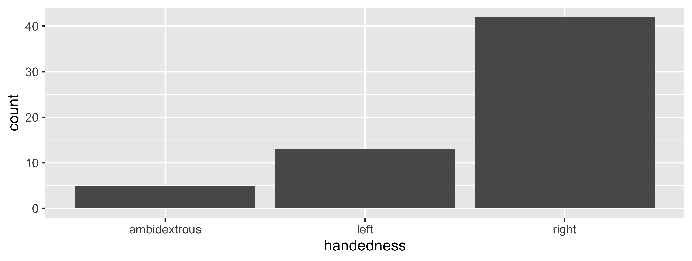
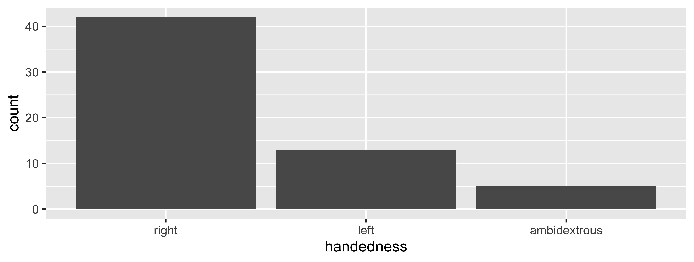

02-dplyr
Data Maniuplation with dplyr
Q&A
Q: what does
|>mean?
A: It means “and then” and is called a “pipe.” Discussing this in more detail in today’s lecture!
Q: I think the lab is much more harder than the lecture.
A: This first week there is a lot to learn regarding tooling, but once you’ve got that down the “process” of completing a lab will become second nature. Then, it’s just content…and applying something is always more difficult than listening to it being explained. So, labs will be a bit harder than lecture…but that’s by design b/c 1) we grade on effort (it’s ok to be wrong in labs!) and 2) answer keys will be posted (learning from mistakes/places we struggle is a great way to learn!)
Q: Just curious about the oral presentation portion of the final project. Will this be a requirement in the form of a recorded video (like in COGS 108), or will we be presenting our project findings live in front of the class on the due date?
A: There are going to be two options (most likely). A recording will definitely be an option. We’re also hoping to have an option where you can come present live, to the instructional staff and any students who want to learn from one another.
Q: I am curious about the similarities and differences between both of Python and R!
A: Very briefly, some similarities: both are object-oriented programming languages (although R is not only object-oriented); both are great for data analysis; differences: python arguably has a simpler syntax; R is, at its core, designed for statistical analysis so I’d argue it’s better for that; Python is a general-programming language so it’s arguablly better for software development; R has an implementation of the grammar of graphics, so I’d argue it’s better for data visualization (but some would disagree).
Q: How can I understand dataframes in R easier?
A: With practice! Today’s lecture, this week 2 lab, and your first hw will help you get additional practice. Then, we’ll use them throughout the course and build your understanding.
Q: For very large data sets, how would you be able to find every type coercion?
A: Each column would have a single type.glimpse()would help you identify the type of each column. From there, you can edit any that are not what you wanted.
Q: Where would be a good location to get some practice on most of the packages we will be using in this class?
A: The labs and homeworks are one place. But, there are also exercises in the “textbook” for this class: https://r4ds.had.co.nz/
Q: How do we grasp Markdown easier?
A: Trying things out and learning the basic rules. I would recommend starting with an RMarkdown document and just typing a sentence. Then knit to see what that looks like. Then, try to bold and italicize some text. Then try to add some headers. Then, add a bulleted list. Each time knitting to see the output. With that, you’ll have most of the markdown you’ll need! reference for basics
Q: I am still not sure whether this class focuses more on the programming aspect or the mathematical concepts
A: Both! First 5 weeks, more programming; Last 5: combination of both are used, but new programming concepts aren’t introduced a ton, so we focus on the stats while continuing to use what we learned the first five weeks!
Q: Is there any rules for coercion?
A: There are rules! Summarized here
Q: When do we use R markdown?
A: When completing labs, homework assignments, case studies, and likely on the final project. You can also take notes in RMarkdown, but that’s up to you!
Q: Never heard about
ggplot2. I think everyone had already heard of it previously…
A: While some students have, you’re not alone! We’ll have two lectures on this and get plenty of practice soon!
Course Announcements
Due Dates:
- Lab 02 due Friday (1/20; 11:59 PM)
- HW01 due Monday (1/23; 11:59 PM)
- Lecture Participation survey “due” after class
Notes (1/19):
- Lab01 Graded - see GitHub issue for comments; 2pts == full credit
- Common issues:
- Did not knit file to HTML
- Did not include name in file
- You do not need to version control the .RProj file
- You should replace the “instruction” text with your explanations/interpretations
- If you received a zero, you should have an email from me
- Common issues:
- Lab02 released
- HW01 released - let’s take a look
Agenda
dplyr- philosophy
- pipes
- common operations
Philosophy
dplyris a grammar of data manipulation, providing a consistent set of verbs that help you solve the most common data manipulation challenges
Source: dplyr.tidyverse.org
Pipes
The pipe in baseR

|>should be read as “and then”- for example “Wake up |> brush teeth” would be read as “wake up and then brush teeth”
Where does the name come from?
The pipe operator was first implemented in the package magrittr.


You will see this frequently in code online. It’s equivalent to |>.
Review: How does a pipe work?
- You can think about the following sequence of actions - find key, unlock car, start car, drive to school, park.
- Expressed as a set of nested functions in R pseudocode this would look like:
park(drive(start_car(find("keys")), to = "campus"))- Writing it out using pipes give it a more natural (and easier to read) structure:
find("keys") |>
start_car() |>
drive(to = "campus") |>
park()Data
NC DOT Fatal Crashes in North Carolina
From OpenDurham’s Data Portal
bike <- read_csv2("https://raw.githubusercontent.com/COGS137/datasets/main/nc_bike_crash.csv",
na = c("NA", "", "."))Variables
View the names of variables via
names(bike) [1] "FID" "OBJECTID" "AmbulanceR" "BikeAge_Gr" "Bike_Age"
[6] "Bike_Alc_D" "Bike_Dir" "Bike_Injur" "Bike_Pos" "Bike_Race"
[11] "Bike_Sex" "City" "County" "CrashAlcoh" "CrashDay"
[16] "Crash_Date" "Crash_Grp" "Crash_Hour" "Crash_Loc" "Crash_Mont"
[21] "Crash_Time" "Crash_Type" "Crash_Ty_1" "Crash_Year" "Crsh_Sevri"
[26] "Developmen" "DrvrAge_Gr" "Drvr_Age" "Drvr_Alc_D" "Drvr_EstSp"
[31] "Drvr_Injur" "Drvr_Race" "Drvr_Sex" "Drvr_VehTy" "ExcsSpdInd"
[36] "Hit_Run" "Light_Cond" "Locality" "Num_Lanes" "Num_Units"
[41] "Rd_Charact" "Rd_Class" "Rd_Conditi" "Rd_Config" "Rd_Defects"
[46] "Rd_Feature" "Rd_Surface" "Region" "Rural_Urba" "Speed_Limi"
[51] "Traff_Cntr" "Weather" "Workzone_I" "Location" Viewing your data
In the Environment, click on the name of the data frame to view it in the data viewer (or use the
Viewfunction)Use the
glimpsefunction to take a peek
glimpse(bike)Rows: 5,716
Columns: 54
$ FID <dbl> 18, 29, 33, 35, 49, 53, 56, 60, 63, 66, 72, 75, 82, 84, 85,…
$ OBJECTID <dbl> 19, 30, 34, 36, 50, 54, 57, 61, 64, 67, 73, 76, 83, 85, 86,…
$ AmbulanceR <chr> "No", "Yes", "No", "Yes", "No", "Yes", "Yes", "No", "Yes", …
$ BikeAge_Gr <chr> NA, "50-59", NA, "16-19", NA, "50-59", "16-19", "40-49", "1…
$ Bike_Age <dbl> 6, 51, 10, 17, 6, 52, 18, 40, 6, 7, 45, 30, 17, 20, 14, 15,…
$ Bike_Alc_D <chr> "No", "No", "No", "No", "No", "No", "No", "No", "No", "No",…
$ Bike_Dir <chr> "Not Applicable", "With Traffic", "With Traffic", NA, "Faci…
$ Bike_Injur <chr> "C: Possible Injury", "C: Possible Injury", "Injury", "B: E…
$ Bike_Pos <chr> "Driveway / Alley", "Travel Lane", "Travel Lane", "Travel L…
$ Bike_Race <chr> "Black", "Black", "Black", "White", "Black", "White", "Blac…
$ Bike_Sex <chr> "Female", "Male", "Male", "Male", "Male", "Male", "Female",…
$ City <chr> "Durham", "Greenville", "Farmville", "Charlotte", "Charlott…
$ County <chr> "Durham", "Pitt", "Pitt", "Mecklenburg", "Mecklenburg", "Du…
$ CrashAlcoh <chr> "No", "No", "No", "No", "No", "No", "No", "No", "No", "No",…
$ CrashDay <chr> "01-01-06", "01-01-02", "01-01-07", "01-01-05", NA, NA, NA,…
$ Crash_Date <date> 2007-01-06, 2007-01-09, 2007-01-14, 2007-01-12, 2007-01-15…
$ Crash_Grp <chr> "Bicyclist Failed to Yield - Midblock", "Crossing Paths - O…
$ Crash_Hour <dbl> 13, 23, 16, 19, 12, 20, 19, 14, 16, 0, 17, 18, 14, 17, 19, …
$ Crash_Loc <chr> "Non-Intersection", "Intersection-Related", "Intersection",…
$ Crash_Mont <chr> NA, NA, NA, NA, NA, "01-04-01", "01-04-01", NA, "01-02-01",…
$ Crash_Time <dttm> 0001-01-01 13:17:58, 0001-01-01 23:08:58, 0001-01-01 16:44…
$ Crash_Type <chr> "Bicyclist Ride Out - Residential Driveway", "Crossing Path…
$ Crash_Ty_1 <dbl> 353311, 211180, 111144, 119139, 112114, 311231, 119144, 132…
$ Crash_Year <dbl> 2007, 2007, 2007, 2007, 2007, 2007, 2007, 2007, 2007, 2007,…
$ Crsh_Sevri <chr> "C: Possible Injury", "C: Possible Injury", "O: No Injury",…
$ Developmen <chr> "Residential", "Commercial", "Residential", "Residential", …
$ DrvrAge_Gr <chr> "60-69", "30-39", "50-59", "30-39", NA, "20-24", "40-49", N…
$ Drvr_Age <dbl> 66, 34, 52, 33, NA, 20, 40, NA, 17, 51, NA, 64, 50, 66, 30,…
$ Drvr_Alc_D <chr> "No", "No", "No", "No", "Missing", "No", "No", "Missing", "…
$ Drvr_EstSp <chr> "11-15 mph", "0-5 mph", "21-25 mph", "46-50 mph", "16-20 mp…
$ Drvr_Injur <chr> "O: No Injury", "O: No Injury", "O: No Injury", "O: No Inju…
$ Drvr_Race <chr> "Black", "Black", "White", "White", "/Missing", "White", "B…
$ Drvr_Sex <chr> "Male", "Male", "Female", "Female", NA, "Female", "Male", N…
$ Drvr_VehTy <chr> "Pickup", "Passenger Car", "Passenger Car", "Sport Utility"…
$ ExcsSpdInd <chr> "No", "No", "No", "No", "No", "No", "No", "No", "No", "No",…
$ Hit_Run <chr> "No", "No", "No", "No", "Yes", "No", "No", "Yes", "No", "No…
$ Light_Cond <chr> "Daylight", "Dark - Lighted Roadway", "Daylight", "Dark - R…
$ Locality <chr> "Mixed (30% To 70% Developed)", "Urban (>70% Developed)", "…
$ Num_Lanes <chr> "2 lanes", "5 lanes", "2 lanes", "4 lanes", "2 lanes", "4 l…
$ Num_Units <dbl> 2, 2, 2, 3, 2, 2, 2, 2, 2, 2, 2, 2, 2, 2, 2, 2, 2, 2, 2, 2,…
$ Rd_Charact <chr> "Straight - Level", "Straight - Level", "Straight - Level",…
$ Rd_Class <chr> "Local Street", "Local Street", "Local Street", "NC Route",…
$ Rd_Conditi <chr> "Dry", "Dry", "Dry", "Dry", "Dry", "Dry", "Dry", "Dry", "Dr…
$ Rd_Config <chr> "Two-Way, Not Divided", "Two-Way, Divided, Unprotected Medi…
$ Rd_Defects <chr> "None", "None", "None", "None", "None", "None", "None", "No…
$ Rd_Feature <chr> "No Special Feature", "Four-Way Intersection", "Four-Way In…
$ Rd_Surface <chr> "Smooth Asphalt", "Smooth Asphalt", "Smooth Asphalt", "Smoo…
$ Region <chr> "Piedmont", "Coastal", "Coastal", "Piedmont", "Piedmont", "…
$ Rural_Urba <chr> "Urban", "Urban", "Rural", "Urban", "Urban", "Urban", "Urba…
$ Speed_Limi <chr> "20 - 25 MPH", "40 - 45 MPH", "30 - 35 MPH", "40 - 45 M…
$ Traff_Cntr <chr> "No Control Present", "Stop And Go Signal", "Stop Sign", "S…
$ Weather <chr> "Clear", "Clear", "Clear", "Cloudy", "Clear", "Clear", "Cle…
$ Workzone_I <chr> "No", "No", "No", "No", "No", "No", "No", "No", "No", "No",…
$ Location <chr> "36.002743, -78.8785", "35.612984, -77.39265", "35.595676, …dplyr
A Grammar of Data Manipulation
dplyr is based on the concepts of functions as verbs that manipulate data frames.
Single data frame functions / verbs:
filter: pick rows matching criteriaslice: pick rows using index(es)select: pick columns by namepull: grab a column as a vectorrename: rename specific columnsarrange: reorder rowsmutate: add new variablestransmute: create new data frame with variablesdistinct: filter for unique rowssample_n/sample_frac: randomly sample rowssummarize: reduce variables to values- … (many more)
dplyr rules for functions
First argument is always a data frame
Subsequent arguments say what to do with that data frame
Always return a data frame
Do not modify in place
Performance via lazy evaluation
Filter rows with filter
- Select a subset of rows in a data frame.
- Easily filter for many conditions at once.
filter
for crashes in Durham County
# A tibble: 253 × 54
FID OBJEC…¹ Ambul…² BikeA…³ Bike_…⁴ Bike_…⁵ Bike_…⁶ Bike_…⁷ Bike_…⁸ Bike_…⁹
<dbl> <dbl> <chr> <chr> <dbl> <chr> <chr> <chr> <chr> <chr>
1 18 19 No <NA> 6 No Not Ap… C: Pos… Drivew… Black
2 53 54 Yes 50-59 52 No With T… A: Dis… Travel… White
3 56 57 Yes 16-19 18 No <NA> C: Pos… Travel… Black
4 209 210 No 16-19 16 No Facing… C: Pos… <NA> Black
5 228 229 Yes 40-49 40 No With T… B: Evi… Bike L… Black
6 620 621 Yes 50-59 55 No With T… B: Evi… Travel… White
7 667 668 Yes 60-69 61 No Not Ap… B: Evi… Sidewa… Black
8 458 459 Yes 60-69 62 No With T… B: Evi… Travel… White
9 576 577 No 40-49 49 No With T… C: Pos… Travel… Black
10 618 619 No 20-24 23 No With T… C: Pos… Travel… Asian
# … with 243 more rows, 44 more variables: Bike_Sex <chr>, City <chr>,
# County <chr>, CrashAlcoh <chr>, CrashDay <chr>, Crash_Date <date>,
# Crash_Grp <chr>, Crash_Hour <dbl>, Crash_Loc <chr>, Crash_Mont <chr>,
# Crash_Time <dttm>, Crash_Type <chr>, Crash_Ty_1 <dbl>, Crash_Year <dbl>,
# Crsh_Sevri <chr>, Developmen <chr>, DrvrAge_Gr <chr>, Drvr_Age <dbl>,
# Drvr_Alc_D <chr>, Drvr_EstSp <chr>, Drvr_Injur <chr>, Drvr_Race <chr>,
# Drvr_Sex <chr>, Drvr_VehTy <chr>, ExcsSpdInd <chr>, Hit_Run <chr>, …filter
for crashes in Durham County where biker was < 10 yrs old
# A tibble: 20 × 54
FID OBJEC…¹ Ambul…² BikeA…³ Bike_…⁴ Bike_…⁵ Bike_…⁶ Bike_…⁷ Bike_…⁸ Bike_…⁹
<dbl> <dbl> <chr> <chr> <dbl> <chr> <chr> <chr> <chr> <chr>
1 18 19 No <NA> 6 No Not Ap… C: Pos… Drivew… Black
2 47 48 No 10-Jun 9 No Not Ap… O: No … Non-Ro… Black
3 124 125 Yes 10-Jun 8 No With T… C: Pos… Travel… Black
4 531 532 Yes 10-Jun 7 No With T… C: Pos… Travel… Black
5 704 705 Yes 10-Jun 9 No Not Ap… C: Pos… Non-Ro… Black
6 42 43 No 10-Jun 8 No With T… O: No … Travel… Black
7 392 393 Yes 0-5 2 No Not Ap… B: Evi… Drivew… Black
8 941 942 No 10-Jun 9 No With T… C: Pos… Travel… Black
9 436 437 Yes 10-Jun 6 No Not Ap… O: No … Drivew… Black
10 160 161 Yes 10-Jun 7 No With T… C: Pos… Travel… Black
11 273 274 Yes 10-Jun 7 No Facing… C: Pos… Travel… Black
12 78 79 Yes 10-Jun 7 No With T… C: Pos… Travel… Black
13 422 423 No 10-Jun 9 No Not Ap… O: No … Drivew… Black
14 570 571 No <NA> 0 Missing Not Ap… Injury Non-Ro… /Missi…
15 683 684 Yes 10-Jun 8 No Not Ap… C: Pos… Non-Ro… Black
16 62 63 Yes 10-Jun 7 No With T… C: Pos… Travel… Black
17 248 249 No 0-5 4 No Not Ap… O: No … Drivew… Hispan…
18 306 307 Yes 10-Jun 8 No With T… C: Pos… <NA> Black
19 231 232 Yes 10-Jun 8 No With T… C: Pos… Travel… Black
20 361 362 Yes 10-Jun 9 No With T… B: Evi… Travel… Hispan…
# … with 44 more variables: Bike_Sex <chr>, City <chr>, County <chr>,
# CrashAlcoh <chr>, CrashDay <chr>, Crash_Date <date>, Crash_Grp <chr>,
# Crash_Hour <dbl>, Crash_Loc <chr>, Crash_Mont <chr>, Crash_Time <dttm>,
# Crash_Type <chr>, Crash_Ty_1 <dbl>, Crash_Year <dbl>, Crsh_Sevri <chr>,
# Developmen <chr>, DrvrAge_Gr <chr>, Drvr_Age <dbl>, Drvr_Alc_D <chr>,
# Drvr_EstSp <chr>, Drvr_Injur <chr>, Drvr_Race <chr>, Drvr_Sex <chr>,
# Drvr_VehTy <chr>, ExcsSpdInd <chr>, Hit_Run <chr>, Light_Cond <chr>, …Aside: real data is messy!
What in the world does a BikeAge_gr of 10-Jun or 15-Nov mean?
bike |>
group_by(BikeAge_Gr) |>
summarize(crash_count = n())# A tibble: 13 × 2
BikeAge_Gr crash_count
<chr> <int>
1 0-5 60
2 10-Jun 421
3 15-Nov 747
4 16-19 605
5 20-24 680
6 25-29 430
7 30-39 658
8 40-49 920
9 50-59 739
10 60-69 274
11 70 12
12 70+ 58
13 <NA> 112Careful data scientists clean up their data first!
- We’re going to need to do some text parsing to clean up these data
10-Junshould be6-1015-Novshould be11-15
Correct and overwrite mutate
- Remember we want to do the following in the
BikeAge_Grvariable10-Junshould be6-1015-Novshould be11-15
- Note that we’re overwriting existing data and columns, so be careful!
- But remember, it’s easy to revert if you make a mistake since we didn’t touch the raw data, we can always reload it and start over
Check before you move on
Always check your changes and confirm code did what you wanted it to do
bike |>
group_by(BikeAge_Gr) |>
summarize(count = n())# A tibble: 13 × 2
BikeAge_Gr count
<chr> <int>
1 0-5 60
2 11-15 747
3 16-19 605
4 20-24 680
5 25-29 430
6 30-39 658
7 40-49 920
8 50-59 739
9 6-10 421
10 60-69 274
11 70 12
12 70+ 58
13 <NA> 112mutate to add new variables
How is the new alcohol variable determined?
bike |>
mutate(alcohol = case_when(
Bike_Alc_D == "No" & Drvr_Alc_D == "No" ~ "No",
Bike_Alc_D == "Yes" | Drvr_Alc_D == "Yes" ~ "Yes",
Bike_Alc_D == "Missing" & Drvr_Alc_D == "No" ~ "Missing",
Bike_Alc_D == "No" & Drvr_Alc_D == "Missing" ~ "Missing"
))“Save” when you mutate
Most often when you define a new variable with mutate you’ll also want to save the resulting data frame, often by writing over the original data frame.
bike <- bike |>
mutate(alcohol = case_when(
Bike_Alc_D == "No" & Drvr_Alc_D == "No" ~ "No",
Bike_Alc_D == "Yes" | Drvr_Alc_D == "Yes" ~ "Yes",
Bike_Alc_D == "Missing" & Drvr_Alc_D == "No" ~ "Missing",
Bike_Alc_D == "No" & Drvr_Alc_D == "Missing" ~ "Missing"
))transmute to create a new dataset
You’ll use this much less often than mutate but when you need it, you need it.
mutate vs. transmute
mutateadds new and keeps originaltransmuteadds new; drops existing
Your Turn
How many accidents in our dataset required an ambulance ride (AmbulanceR) and had the Crash_Type “Bicyclist Lost Control - Mechanical Problems”?
Put a green sticky on the front of your computer when you’re done. Put a pink if you want help/have a question.
slice for certain row numbers
First five
# A tibble: 5 × 54
FID OBJECTID Ambul…¹ BikeA…² Bike_…³ Bike_…⁴ Bike_…⁵ Bike_…⁶ Bike_…⁷ Bike_…⁸
<dbl> <dbl> <chr> <chr> <dbl> <chr> <chr> <chr> <chr> <chr>
1 18 19 No <NA> 6 No Not Ap… C: Pos… Drivew… Black
2 29 30 Yes 50-59 51 No With T… C: Pos… Travel… Black
3 33 34 No <NA> 10 No With T… Injury Travel… Black
4 35 36 Yes 16-19 17 No <NA> B: Evi… Travel… White
5 49 50 No <NA> 6 No Facing… O: No … Travel… Black
# … with 44 more variables: Bike_Sex <chr>, City <chr>, County <chr>,
# CrashAlcoh <chr>, CrashDay <chr>, Crash_Date <date>, Crash_Grp <chr>,
# Crash_Hour <dbl>, Crash_Loc <chr>, Crash_Mont <chr>, Crash_Time <dttm>,
# Crash_Type <chr>, Crash_Ty_1 <dbl>, Crash_Year <dbl>, Crsh_Sevri <chr>,
# Developmen <chr>, DrvrAge_Gr <chr>, Drvr_Age <dbl>, Drvr_Alc_D <chr>,
# Drvr_EstSp <chr>, Drvr_Injur <chr>, Drvr_Race <chr>, Drvr_Sex <chr>,
# Drvr_VehTy <chr>, ExcsSpdInd <chr>, Hit_Run <chr>, Light_Cond <chr>, …slice for certain row numbers
Last five
# A tibble: 5 × 54
FID OBJECTID Ambul…¹ BikeA…² Bike_…³ Bike_…⁴ Bike_…⁵ Bike_…⁶ Bike_…⁷ Bike_…⁸
<dbl> <dbl> <chr> <chr> <dbl> <chr> <chr> <chr> <chr> <chr>
1 460 461 Yes 6-10 7 No Not Ap… C: Pos… Drivew… Black
2 474 475 Yes 50-59 50 No With T… B: Evi… Travel… White
3 479 480 Yes 16-19 16 No Not Ap… C: Pos… Sidewa… White
4 487 488 No 40-49 47 Yes With T… C: Pos… Travel… White
5 488 489 Yes 30-39 35 No Facing… C: Pos… Travel… Black
# … with 44 more variables: Bike_Sex <chr>, City <chr>, County <chr>,
# CrashAlcoh <chr>, CrashDay <chr>, Crash_Date <date>, Crash_Grp <chr>,
# Crash_Hour <dbl>, Crash_Loc <chr>, Crash_Mont <chr>, Crash_Time <dttm>,
# Crash_Type <chr>, Crash_Ty_1 <dbl>, Crash_Year <dbl>, Crsh_Sevri <chr>,
# Developmen <chr>, DrvrAge_Gr <chr>, Drvr_Age <dbl>, Drvr_Alc_D <chr>,
# Drvr_EstSp <chr>, Drvr_Injur <chr>, Drvr_Race <chr>, Drvr_Sex <chr>,
# Drvr_VehTy <chr>, ExcsSpdInd <chr>, Hit_Run <chr>, Light_Cond <chr>, …select to keep only the variables you mention
or select to exclude variables
# A tibble: 5,716 × 53
FID Ambul…¹ BikeA…² Bike_…³ Bike_…⁴ Bike_…⁵ Bike_…⁶ Bike_…⁷ Bike_…⁸ Bike_…⁹
<dbl> <chr> <chr> <dbl> <chr> <chr> <chr> <chr> <chr> <chr>
1 18 No <NA> 6 No Not Ap… C: Pos… Drivew… Black Female
2 29 Yes 50-59 51 No With T… C: Pos… Travel… Black Male
3 33 No <NA> 10 No With T… Injury Travel… Black Male
4 35 Yes 16-19 17 No <NA> B: Evi… Travel… White Male
5 49 No <NA> 6 No Facing… O: No … Travel… Black Male
6 53 Yes 50-59 52 No With T… A: Dis… Travel… White Male
7 56 Yes 16-19 18 No <NA> C: Pos… Travel… Black Female
8 60 No 40-49 40 No Facing… B: Evi… Sidewa… Hispan… Male
9 63 Yes 6-10 6 No Facing… B: Evi… Travel… White Male
10 66 Yes 6-10 7 No <NA> B: Evi… Non-Ro… Black Female
# … with 5,706 more rows, 43 more variables: City <chr>, County <chr>,
# CrashAlcoh <chr>, CrashDay <chr>, Crash_Date <date>, Crash_Grp <chr>,
# Crash_Hour <dbl>, Crash_Loc <chr>, Crash_Mont <chr>, Crash_Time <dttm>,
# Crash_Type <chr>, Crash_Ty_1 <dbl>, Crash_Year <dbl>, Crsh_Sevri <chr>,
# Developmen <chr>, DrvrAge_Gr <chr>, Drvr_Age <dbl>, Drvr_Alc_D <chr>,
# Drvr_EstSp <chr>, Drvr_Injur <chr>, Drvr_Race <chr>, Drvr_Sex <chr>,
# Drvr_VehTy <chr>, ExcsSpdInd <chr>, Hit_Run <chr>, Light_Cond <chr>, …or select a range of variables
# A tibble: 5,716 × 7
OBJECTID AmbulanceR BikeAge_Gr Bike_Age Bike_Alc_D Bike_Dir Bike_Injur
<dbl> <chr> <chr> <dbl> <chr> <chr> <chr>
1 19 No <NA> 6 No Not Applicable C: Possibl…
2 30 Yes 50-59 51 No With Traffic C: Possibl…
3 34 No <NA> 10 No With Traffic Injury
4 36 Yes 16-19 17 No <NA> B: Evident…
5 50 No <NA> 6 No Facing Traffic O: No Inju…
6 54 Yes 50-59 52 No With Traffic A: Disabli…
7 57 Yes 16-19 18 No <NA> C: Possibl…
8 61 No 40-49 40 No Facing Traffic B: Evident…
9 64 Yes 6-10 6 No Facing Traffic B: Evident…
10 67 Yes 6-10 7 No <NA> B: Evident…
# … with 5,706 more rowspull to extract a column as a vector
[1] "36.002743, -78.8785" "35.612984, -77.39265" "35.595676, -77.59074"
[4] "35.076767, -80.7728" "35.19999, -80.75713" "35.966644, -78.96749"bike |>
slice(1:6) |>
select(Location)# A tibble: 6 × 1
Location
<chr>
1 36.002743, -78.8785
2 35.612984, -77.39265
3 35.595676, -77.59074
4 35.076767, -80.7728
5 35.19999, -80.75713
6 35.966644, -78.96749The two pulls in your lives

Don’t get
pullhappy when wrangling data! Only extract out variables if you truly need to, otherwise keep in data frame.But always ⬇️
Pullbefore starting your work when collaborating on GitHub.
rename specific columns
Useful for correcting typos, and renaming to make variable names shorter and/or more informative
- Original names:
names(bike) [1] "FID" "OBJECTID" "AmbulanceR" "BikeAge_Gr" "Bike_Age"
[6] "Bike_Alc_D" "Bike_Dir" "Bike_Injur" "Bike_Pos" "Bike_Race"
[11] "Bike_Sex" "City" "County" "CrashAlcoh" "CrashDay"
[16] "Crash_Date" "Crash_Grp" "Crash_Hour" "Crash_Loc" "Crash_Mont"
[21] "Crash_Time" "Crash_Type" "Crash_Ty_1" "Crash_Year" "Crsh_Sevri"
[26] "Developmen" "DrvrAge_Gr" "Drvr_Age" "Drvr_Alc_D" "Drvr_EstSp"
[31] "Drvr_Injur" "Drvr_Race" "Drvr_Sex" "Drvr_VehTy" "ExcsSpdInd"
[36] "Hit_Run" "Light_Cond" "Locality" "Num_Lanes" "Num_Units"
[41] "Rd_Charact" "Rd_Class" "Rd_Conditi" "Rd_Config" "Rd_Defects"
[46] "Rd_Feature" "Rd_Surface" "Region" "Rural_Urba" "Speed_Limi"
[51] "Traff_Cntr" "Weather" "Workzone_I" "Location" rename specific columns
- Rename
Speed_LimitoSpeed_Limit:
Check before you move on
Always check your changes and confirm code did what you wanted it to do
names(bike) [1] "FID" "OBJECTID" "AmbulanceR" "BikeAge_Gr" "Bike_Age"
[6] "Bike_Alc_D" "Bike_Dir" "Bike_Injur" "Bike_Pos" "Bike_Race"
[11] "Bike_Sex" "City" "County" "CrashAlcoh" "CrashDay"
[16] "Crash_Date" "Crash_Grp" "Crash_Hour" "Crash_Loc" "Crash_Mont"
[21] "Crash_Time" "Crash_Type" "Crash_Ty_1" "Crash_Year" "Crsh_Sevri"
[26] "Developmen" "DrvrAge_Gr" "Drvr_Age" "Drvr_Alc_D" "Drvr_EstSp"
[31] "Drvr_Injur" "Drvr_Race" "Drvr_Sex" "Drvr_VehTy" "ExcsSpdInd"
[36] "Hit_Run" "Light_Cond" "Locality" "Num_Lanes" "Num_Units"
[41] "Rd_Charact" "Rd_Class" "Rd_Conditi" "Rd_Config" "Rd_Defects"
[46] "Rd_Feature" "Rd_Surface" "Region" "Rural_Urba" "Speed_Limit"
[51] "Traff_Cntr" "Weather" "Workzone_I" "Location" Your Turn
Your boss in Cumberland County gets overwhelmed by data easily, but he wants some data from you. He wants all bike accidents from his County, but he only wants to know the road’s speed limit, the age of the biker, and to know if alcohol was involved. If you have time, mine as well make the column names very clear to your boss while you’re at it…
Put a green sticky on the front of your computer when you’re done. Put a pink if you want help/have a question.
summarize to reduce variables to values
The values are summarized in a data frame
and arrange to order rows
count to group by then count
bike |>
count(BikeAge_Gr)# A tibble: 13 × 2
BikeAge_Gr n
<chr> <int>
1 0-5 60
2 11-15 747
3 16-19 605
4 20-24 680
5 25-29 430
6 30-39 658
7 40-49 920
8 50-59 739
9 6-10 421
10 60-69 274
11 70 12
12 70+ 58
13 <NA> 112If you wanted to arrange these in ascending order what would you add to the pipe?
Select rows with sample_n or sample_frac
sample_n: randomly sample 5 observations
sample_frac: randomly sample 20% of observations
distinct to filter for unique rows
# A tibble: 360 × 2
County City
<chr> <chr>
1 Alamance Alamance
2 Alamance Burlington
3 Alamance Elon College
4 Alamance Gibsonville
5 Alamance Graham
6 Alamance Green Level
7 Alamance Mebane
8 Alamance None - Rural Crash
9 Alexander None - Rural Crash
10 Alleghany None - Rural Crash
# … with 350 more rowsdistinct has a .keep_all parameter
# A tibble: 360 × 54
FID OBJEC…¹ Ambul…² BikeA…³ Bike_…⁴ Bike_…⁵ Bike_…⁶ Bike_…⁷ Bike_…⁸ Bike_…⁹
<dbl> <dbl> <chr> <chr> <dbl> <chr> <chr> <chr> <chr> <chr>
1 524 525 Yes 11-15 12 No <NA> B: Evi… <NA> Black
2 84 85 Yes 20-24 20 No With T… B: Evi… Travel… White
3 571 572 Yes 16-19 16 No Not Ap… B: Evi… Non-Ro… White
4 509 510 Yes 40-49 43 Yes With T… K: Kil… Travel… Black
5 855 856 Yes 30-39 30 No With T… A: Dis… Travel… Black
6 5 6 Yes 40-49 44 Yes With T… C: Pos… Travel… Black
7 163 164 Yes 30-39 35 No Not Ap… C: Pos… <NA> White
8 96 97 Yes 30-39 36 No With T… C: Pos… Travel… White
9 46 47 Yes 50-59 53 No With T… B: Evi… Travel… White
10 485 486 Yes 60-69 62 No With T… C: Pos… Travel… White
# … with 350 more rows, 44 more variables: Bike_Sex <chr>, City <chr>,
# County <chr>, CrashAlcoh <chr>, CrashDay <chr>, Crash_Date <date>,
# Crash_Grp <chr>, Crash_Hour <dbl>, Crash_Loc <chr>, Crash_Mont <chr>,
# Crash_Time <dttm>, Crash_Type <chr>, Crash_Ty_1 <dbl>, Crash_Year <dbl>,
# Crsh_Sevri <chr>, Developmen <chr>, DrvrAge_Gr <chr>, Drvr_Age <dbl>,
# Drvr_Alc_D <chr>, Drvr_EstSp <chr>, Drvr_Injur <chr>, Drvr_Race <chr>,
# Drvr_Sex <chr>, Drvr_VehTy <chr>, ExcsSpdInd <chr>, Hit_Run <chr>, …Factors
Factors
Factor objects are how R stores data for categorical variables (fixed numbers of discrete values).
(x = factor(c("BS", "MS", "PhD", "MS")))[1] BS MS PhD MS
Levels: BS MS PhDglimpse(x) Factor w/ 3 levels "BS","MS","PhD": 1 2 3 2typeof(x)[1] "integer"Returning to: Cat lovers
Reading in the cat-lovers data…
cat_lovers <- read_csv("https://raw.githubusercontent.com/COGS137/datasets/main/cat-lovers.csv")Read data in as character strings
glimpse(cat_lovers)Rows: 60
Columns: 3
$ name <chr> "Bernice Warren", "Woodrow Stone", "Willie Bass", "Tyro…
$ number_of_cats <chr> "0", "0", "1", "3", "3", "2", "1", "1", "0", "0", "0", …
$ handedness <chr> "left", "left", "left", "left", "left", "left", "left",…But coerce when plotting
ggplot(cat_lovers, mapping = aes(x = handedness)) +
geom_bar()
Use forcats to manipulate factors
cat_lovers <- cat_lovers |>
mutate(handedness = fct_relevel(handedness,
"right", "left", "ambidextrous"))ggplot(cat_lovers, mapping = aes(x = handedness)) +
geom_bar()
forcats functionality 
R uses factors to handle categorical variables, variables that have a fixed and known set of possible values. Historically, factors were much easier to work with than character vectors, so many base R functions automatically convert character vectors to factors.
factors are still useful when you have true categorical data, and when you want to override the ordering of character vectors to improve display. The goal of the forcats package is to provide a suite of useful tools that solve common problems with factors.
Source: forcats.tidyverse.org
Recap
- Understand the basic tenants of
dplyr - Describe and utilize the pipe in workflows
- Describe and use common
verbs(functions) - Understand the documentation for
dplyrfunctions - Understand what factors are an that
forcatsis a package with functionality for working with them
Suggested Reading
R4DS:
- Chapter 5: Data Transformation
- Chapter 15: Factors